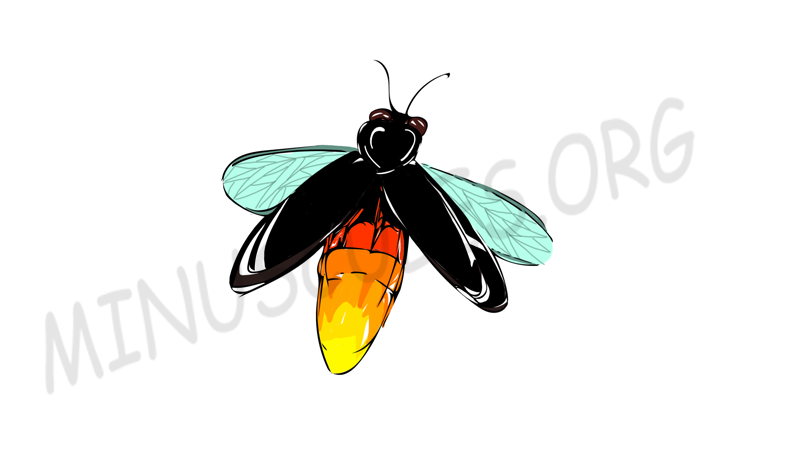

Bioluminescence in Fireflies
05/07/2020
Ever wondered why and how a Firefly(lightning bug) is able to light up?? Is it to scare away predators? or to communicate with its peers? or to produce heat for keeping itself warm? In this article we have covered answers to all such questions and more.
Many marine vertebrates and invertebrates and also some microorganisms and terrestrial arthropods showcase a form of chemiluminescence called Bioluminescence. Fireflies too are capable of producing a chemical reaction caused by an organic compound in their abdomen that allows them to light up. The compound is called luciferin and the method by which fireflies produce light is perhaps the best known example of bioluminescence. Specifically because, the two main ingredients of the process—oxygen and luciferin—aren't likely to react with each other in the way they would need to in order to produce light. Understanding this gets complicated fast, but Dr. Bruce Branchini at Connecticut College came up with the break-through idea behind the process that the oxygen involved in the reaction comes in a special form called a superoxide anion, which basically is an oxygen atom with an extra electron. When this superoxide anion combines with calcium, adenosine triphosphate (ATP) and the chemical luciferin in the presence of luciferase (a bioluminescent enzyme) light is produced.
A firefly controls the beginning and end of the chemical reaction by regulating the airflow into the abdomen to create a pulsating pattern, and thus the start and stop of its light emission, by adding oxygen to the other chemicals needed to produce light. This happens in the insect's light organ. When oxygen is available, the light organ lights up, and visa versa. Fireflies appear to light up for a variety of reasons. Fireflies produce defensive steroids in their bodies that make them unpalatable to predators. Larvae use their glows as warning displays to communicate their distastefulness towards a potential danger. As adults, many fireflies have flash patterns unique to their species and use them to identify other members of their species as well as to discriminate between members of the opposite sex. Thus, their bioluminescence can be considered a way of communication. Also, Unlike a light bulb, which produces a lot of heat in addition to light, a firefly's light is "cold light" without a lot of energy being lost as heat. This is necessary because if a firefly's light-producing organ got as hot as a light bulb, the firefly would not survive the experience.
On the other hand, Luciferin that is extractable from fireflies is a very important compound, it is considered to have potential to be used in detection of specific enzymes in the brains of living rats, which could someday offer doctors another window into the human brain. Firefly luciferin is already proving to be a useful tool in imaging human tumors and developing cancer-fighting drugs.
So the next time you see a firefly, keep in mind that its flickering isn’t just a wonder of the night. It’s also a unique complex process that can be very beneficial as well.
Author :
KSHITIJ SINHA
Related Articles

The Beautiful Dragon
New"Dragonflies hunt insects with great precision and have a 95% success rate and can eat 30 flies in a row," says Dr. Stacey Combes studying Dragonfly biomechanics at Harvard...

Evolution Of Metamorphosis
NewIt is now known for over 400 years how various animals undergo adverse physical changes during heir life, how a caterpillar changes into a butterfly, and a tadpole into a frog. Metamorphosis, the process by which an animal develops after birth or hatching and goes through relatively...

Why do Scorpions glow under UV light?
NewHave you ever seen a scorpion under moonlight or UV light? Do you know that these magnificent creatures glow in blue-green color?...